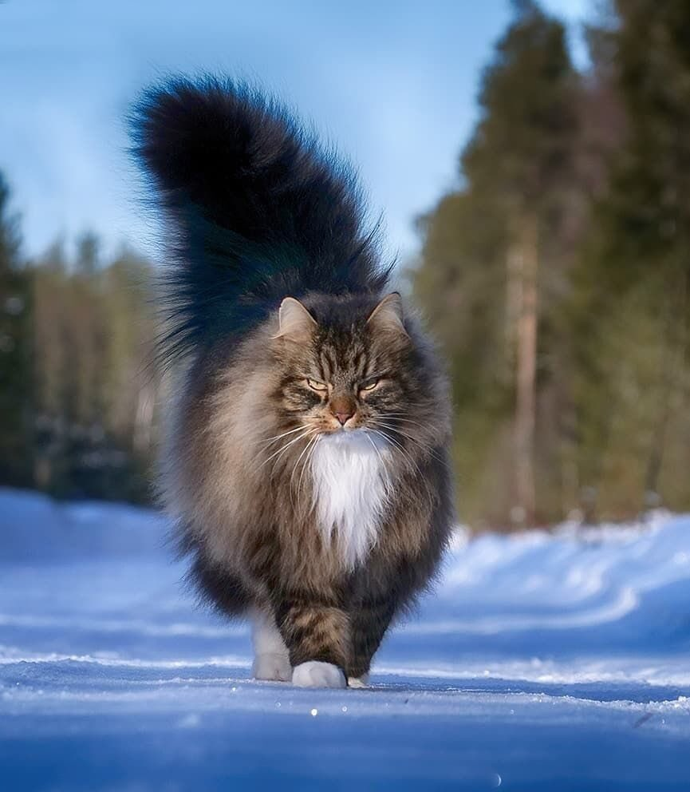
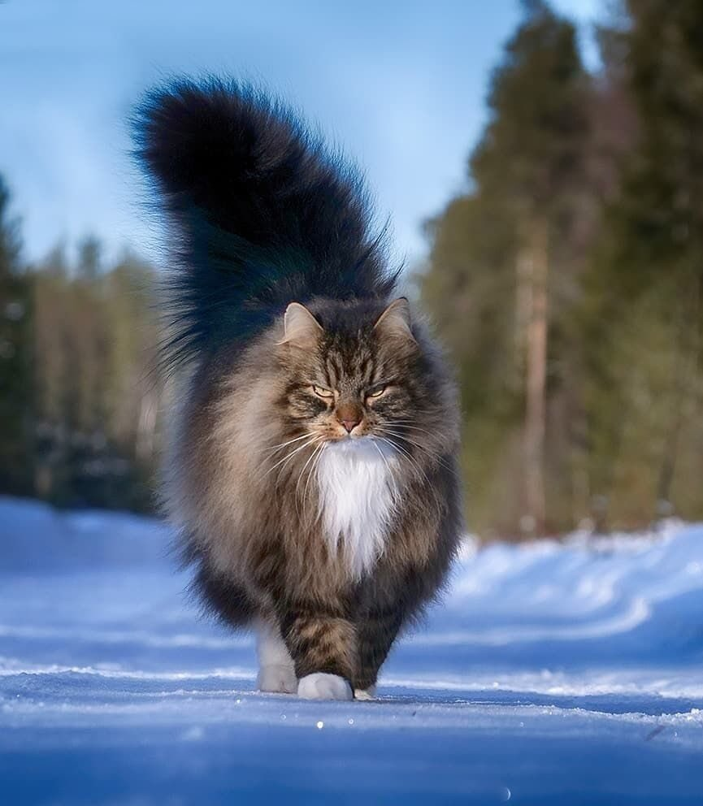

ПУШИСТЫЙ БОЛЬШОЙ ДОБРЯК! С ним дома тепло и уютно. Днем он гроза цветов, ночью молния МАКKУИН))
Не ждите от кота или кошки первое время, когда он/она только появился в вашем доме, полного послушания. Процесс воспитания длительный, порой утомительный и даже отчаянный. Самое главное, никогда не обижайте, не бейте, они понимают ваш тон и голос. Поэтому со временем превратятся в отличников своей породы. А вас будут только радовать.